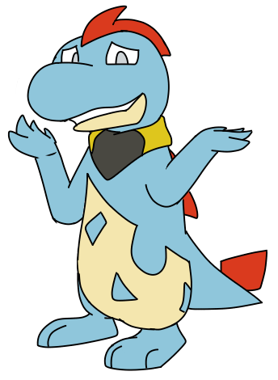

|
Milo is one of two main characters in TPoP. He is a Croconaw and one leader of Team Pouvoir. He and Charlie were adopted by Amelia and Norman and used to live in Johto.
|
Milo
|
|

Design as of November 2019
Pokémon: Croconaw
Parents: Totodile/Croconaw/Feraligatr + ?
Current Status: Alive
Joined Team: Littleroot Town
Voice Actor: Nintenduck
|
|
Appearance
As a Totodile, he appears— for the most part— normal. As a Croconaw, his jaw does not form a large overbite, and his spikes appear to be more curved, but this could be considered an individual difference.
|
Useless Trivia
-
His yellow and black scarf is a reference to Ethan's hat from G/S/C.
-
Milo has cataracts, causing his pupils to appear gray and his vision to be severely blurred.
-
A long, long time ago, he was originally going to be fully blind. His name was also Mizu.
|